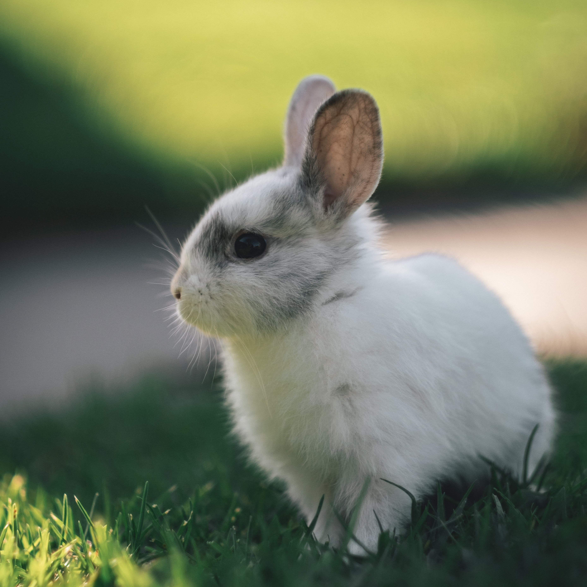

털복숭이 친구들
고양이
토끼
햄스터
토끼

토끼
란 포유강 영장상목 토끼목 토끼과에 속하는 동물이다.
긴 귀가 특징으로 앞다리보다 훨씬 긴 뒷다리를 이용하여 깡충깡충 뛰어다닌다.
솜뭉치 모양으로 위쪽으로 짧아 보이게 말려 있는 꼬리와 긴 꼬리로 일반적으로는 토끼과부터 토끼로 분류한다.
입과 코는 작으며, 입모양이 'ㅅ' 모양. 얼굴은 약간 달걀형에 가깝다.
눈의 색은 검은색이나 갈색, 푸른색 등이 있다. 알비노 개체의 경우 붉은 눈을 지닌다.